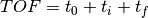
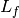
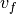
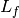
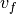
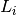
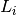
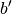
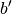

ModeratorTzeroLinear dialog.
Table of Contents
Corrects the time of flight of an indirect geometry instrument by a time offset that is linearly dependent on the wavelength of the neutron after passing through the moderator.
| Name | Direction | Type | Default | Description |
|---|---|---|---|---|
| InputWorkspace | Input | MatrixWorkspace | Mandatory | The name of the input workspace, containing events and/or histogram data, in units of time-of-flight |
| Gradient | Input | number | Optional | Wavelength dependent TOF shift, units in microsec/Angstrom. Overrides the value stored in the instrument object |
| Intercept | Input | number | Optional | TOF shift, units in microseconds. Overrides the valuestored in the instrument object |
| OutputWorkspace | Output | MatrixWorkspace | Mandatory | The name of the output workspace |
This algorithm Corrects the time of flight (TOF) of an indirect geometry
instrument by substracting a time offset  linearly dependent
on the wavelength of the neutron when emitted through the moderator.
This algorithm is suitable to data reduction of indirect instruments
featuring a neutron flux with a narrow distribution of wavelengths. A
empirical formula for the correction, stored in the instrument
definition file, is taken as linear on the initial neutron wavelength
linearly dependent
on the wavelength of the neutron when emitted through the moderator.
This algorithm is suitable to data reduction of indirect instruments
featuring a neutron flux with a narrow distribution of wavelengths. A
empirical formula for the correction, stored in the instrument
definition file, is taken as linear on the initial neutron wavelength
 :
:  . Gradient
. Gradient  is
in units of microsec/Angstrom and Intercept
is
in units of microsec/Angstrom and Intercept  is in units
of microsec. Below is the example XML code included in BASIS beamline
parameters file.
is in units
of microsec. Below is the example XML code included in BASIS beamline
parameters file.
<!-- Moderator Tzero/LambdaZero Parameters -->
<parameter name="Moderator.TimeZero.Gradient">
<value val="11.967"/>
</parameter>
<parameter name="Moderator.TimeZero.Intercept">
<value val="-5.0"/>
</parameter>
The recorded TOF: , with
: emission time from the moderatorThis algorithm will replace TOF with 
For an indirect geometry instrument, is not known but
the final energy,  , selected by the analyzers is known. For
this geometry:
, selected by the analyzers is known. For
this geometry:
 , with : distance from sample to
detector, : final velocity derived from
, with : distance from sample to
detector, : final velocity derived from  , with : distance from moderator to
sample,
, with : distance from moderator to
sample,  : initial velocity unknown
: initial velocity unknown and  constants derived from the
aforementioned empirical formula
and  constants derived from the
aforementioned empirical formula
 with in units of meters
with in units of metersand  with in units of microseconds.
with in units of microseconds.
Putting all together:
 , with
[TOF’]=microsec
, with
[TOF’]=microsec
If the detector is a monitor, then we can treat it as both sample and
detector. Thus, we use the previous formula inserting the time from
sample to detector  and with the initial fligh path
as the distance from source to monitor.
and with the initial fligh path
as the distance from source to monitor.
Categories: AlgorithmIndex | CorrectionFunctions\InstrumentCorrections
C++ header: ModeratorTzeroLinear.h (last modified: 2020-03-20)
C++ source: ModeratorTzeroLinear.cpp (last modified: 2020-04-07)